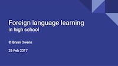
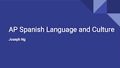

Resources
Helpful articles, seminars, and links for students and parents alike.
Prestigious High School Summer Programs in the U.S.
+
Compiled by Benjamin Owens
Math and Science Summer Programs
Recommended by MIT
- Minority Introduction to Engineering and Science (MITES) is an intensive six-week residential academic enrichment program for about 80 promising high school juniors who intend to pursue careers in science, engineering and entrepreneurship, especially those from minority backgrounds and other underrepresented segments of the population. The program is free of charge to participating students, not including transportation.
- Research Science Institute (RSI) brings together about 70 high school students each summer for six stimulating weeks at MIT. This rigorous academic program stresses advanced theory and research in mathematics, the sciences and engineering. Participants attend college-level classes taught by distinguished faculty members and complete hands-on research, which they often then use to enter science competitions. Open to high school juniors, the program is free of charge for those selected.
- Women's Technology Program (WTP) is a four-week summer academic and residential experience where 60 female high school students explore engineering through hands-on classes (taught by female MIT graduate students), labs, and team-based projects in the summer after their junior year. Students attend WTP in either Electrical Engineering and Computer Science (EECS) or Mechanical Engineering (ME).
- LaunchX - a 4-week entrepreneurship program for high school students, teaching the entrepreneurial skills and mindset through starting real companies. Students go through rigorous coursework, collaborate with peers and mentors, and use the multitude of tools surrounding them at LaunchX to realize what it takes to be successful in the real world – resourcefulness, adaptability, and innovation. Many need-based scholarships are available.
- While the Summer Science Program (SSP) is not on campus, MIT does co-sponsor this residential science research program. With locations in New Mexico and Colorado, and many MIT students among the program's alumni/ae, students learn mathematics, physics, astronomy, and programming over the program's 6 weeks. The curriculum is organized around a central research project: to determine the orbit of a near-earth asteroid (minor planet) from direct astronomical observations.
Science & Research Programs
- BU Research Internship Program (RISE)
- Clark Scholar Program
- Garcia Summer Scholars
- High School Summer Science Research Program (HSSSRP)
- High School Honors Science/Mathematics/Engineering Program (HSHSP)
- International Summer School for Young Physicists (ISSYP)
- Secondary Student Training Program (SSTP)
- Stanford Institutes of Medicine Summer Research Program (SIMR)
- Student Science Training Program (SSTP)
- QuestBridge College Prep Scholars
Math Summer Programs
- AwesomeMath
- Canada/USA Mathcamp
- Hampshire College Summer Studies in Mathematics (HCSSiM)
- Honors Summer Math Camp (HSMC)
- MathILy
- Program in Mathematics for Young Scientists (PROMYS)
- The Ross Program
- Stanford University Mathematics Camp (SUMaC)
- Prove It! Math Academy
State Governor's Schools
Other STEM Summer Programs
- Simons Summer Research Program at Stony Brook University
- COSMOS
- UC Davis Young Scholars Program (YSP)
- The Rockefeller University's Summer Science Research Program (SSRP)
- The Jackson Lab
- Nation Institutes of Health Summer Internship Program in Biomedical Research (SIP)
- Fermi Lab
- NASA Intern
- NASA STEM Enhancement in Earth and Space Science Internship
- NASA INSPIRE
- Science Internship Program
- Science and Engineering Apprenticeship Program (SEAP) (research at a Department of Navy lab)
Non-STEM Summer Programs
- Telluride Association Summer Program (TASP)
- Yale Young Global Scholars (YYGS) [YYGS has a new STEM program too]
- Leadership in the Business World (LBW)
- Boys State and Girls State (government and politics)
- LEAD (business and leadership)
- The Management & Technology Summer Institute (M&TSI)
- Stanford Summer Humanities Institute
- Stanford High School Summer College
- California State Summer School For the Arts (CSSSA)
- Tanglewood Institute (music)
- Interlochen Arts Camp
- Iowa Young Writer’s Studio
- Kenyon College Young Writers Workshop
- The Princeton University Summer Journalism Program (for low income students)
- Senator Page Program; California Senate Page Program
- Bank of America Student Leaders
- Notre Dame Leadership Seminars
- JCamp (Journalism)
- Medill Cherubs (Journalism)
- Telluride Association Sophomore Seminar (TASS)
- National Security Language Initiative for Youth (NSLI-Y) (study a foreign language abroad)
Debate Camps
There are also summer programs at various prestigious universities, such as at Harvard, Columbia, Brown, Cornell, and the University of Pennsylvania.
Last but not least, if you have time, there is a wealth of information on College Confidential's forum for summer camps.
A Comprehensive List of Olympiads
+
Compiled by Benjamin Owens
- USA Mathmatical Olympiad
Steps: AMC10 → AIME → USAJMO→ IMO or AMC12 → AIME → USAMO → IMO
Usually your school administers the AMC contests
Study material:- AOPS：http://www.artofproblemsolving.com/Forum/resources.php
- Art of Problem Solving Volume 1 and 2
- USA Physics Olympiad
Steps：F = MA → Semi-Final Exam → IPHO
Check with your physics teacher if your school hosts F=ma contest.
Physics Olympiad and other contests: http://aapt.org/Programs/contests/index.cfm
Past tests：http://www.aapt.org/physicsteam/2016/exams.cfm
- USA National Chemistry Olympiad
Steps: ACS Local → USNCO → ICHO
Check with your chemistry teacher for taking the first test in the series.
ACS Local:- https://www.acs.org/content/acs/en/membership-and-networks/ls.html
- https://www.acs.org/content/acs/en/education/students/highschool/olympiad.html
- USA Biology Olympiad
Steps: USABO Open → USABO Semifinals→ IBO
Check with your biology teacher for taking USABO Open
Official website: https://www.cee.org/usa-biology-olympiad-usabo Past tests: http://www.mcvts.net/Page/4483
- USA Computing Olympiad
USACO Bronze → Silver → Gold → Platinum → IOI
You can register on the official website http://usaco.org/index.php to take the test
USACO Training: http://usaco.org/index.php?page=training
- North American Computational Linguistics Olympiad
NACLO Round 1 → NACLO Round 2 → ILO
You can register on this official website http://www.nacloweb.org/ to take the test.
Past problems：http://www.nacloweb.org/past_olympiads.php
Extra reading：http://clair.si.umich.edu/naclo/resources/Books.htm
Foreign Language Seminar
+
On February 26, 2017, Bryan Owens and Joseph Ng hosted a we-chat seminar for 500 audience members in the US and around the world.
Bryan shared tips on learning French, German, Chinese and English spelling bee. Here are the slides Bryan used in the seminar:
Joseph Ng shared tips on learning Spanish. Here are the slides Joseph used in the seminar:
On February 16, 2017, Bryan Owens gave a presentation on foreign language learning.

Here are the video recordings of his seminar:
Part 1:
Part 2:
LBW at Warton Seminar
+
On September 18th, 2016, Bryan Owens gave a talk on Leadership in the Business World at The Wharton School.
Sponsored by Wharton School of the University of Pennsylvania, Leadership in the Business World (LBW) is an intensive summer program for a select group of rising high school seniors who want an introduction to a top-notch undergraduate business education and the opportunity to hone their leadership, teamwork, and communication skills. Since 1999, LBW has brought students from six continents and nearly every state to the Wharton School. Its official website is here.
AP French Study Tips
+
By Bryan Owens
- Memorize the gender hints: link. Every rule has exceptions, but you’ve probably already memorized a great deal of the exceptions through your years of learning French. Here are the most important hints that’ll help you out right away:
- Feminine: -e, -ion, -sé, -té, -eur (except malheur, bonheur)
- Masculine: -age, -ble, -eau, -isme, -ment, -é (except -sé, -té), most nouns that end with a consonant
- Memorize prefixes and suffixes. They usually sound like their English equivalents, which means you can often guess French translations with high accuracy. For example:
- dé- = de
- in- = in-, un-
- -ion = -ion
- -isme = -ism (e.g., terrorisme, athéisme, racisme). You will use this suffix all the time when discussing the themes of Les défis mondiaux and La quête de soi
- Try to read 1 full article on current events from Le Monde every day. Look up all the words you don’t know on Wiktionary and make them into a list. Every week or so, review the last week’s list. Wiktionary is great because it gives you etymology (which can aid memorization).
- Review vocab words whenever you can.
- Make sure you have an excellent grasp of grammar because that will boost your confidence to practice talking and writing in French. Plus it will impress your teacher.
- Write emails in French to your teacher, with the customary salutations and closings. This will help you immensely in the email-writing portion of the AP test. Also useful if you want to share your exciting extracurricular accomplishments with your teacher.
Obtaining a Driver's Permit in California (under 18 years)
+
By Bryan Owens
Instructions on how to get a permit: here.
I used this course: https://www.mycaliforniapermit.com/. Some of the things in the course are not relevant though, such as the parts of a car (just glance through that section quickly). A friend said he used this Driver Ed course: http://www.cal-driver-ed.com/, $10.
The most important thing is to read the handbook: https://www.dmv.ca.gov/web/eng_pdf/dl600.pdf.
Before the real test, make sure to take at least three practice tests: http://driving-tests.org/california/.
I spent about 4-5 hours on the course, another 1-2 hours reading the handbook (much of the stuff in the handbook is already covered by the course but you should read the entire thing anyway), and another 2 hours or so doing practice tests. In total I spent about 7-9 hours.
You should start learning it now so you can get your permit as quickly as possible. It is best to space out the course and reading instead of doing a lot in a short period of time so that you can remember it better.